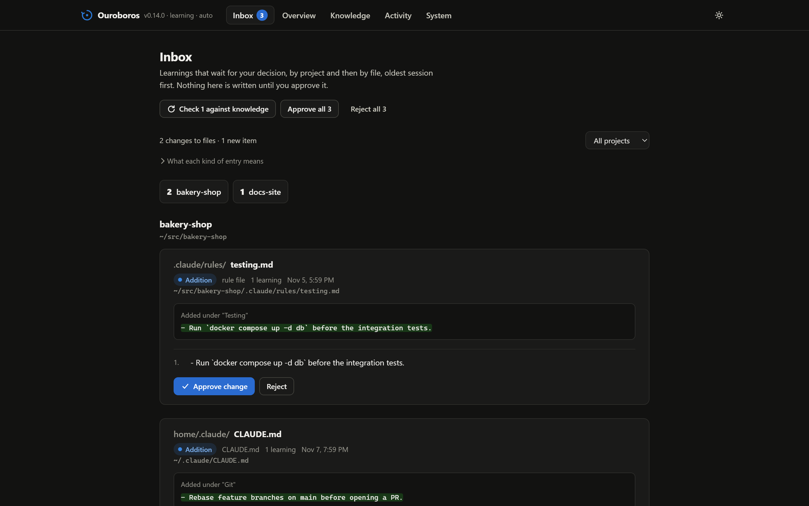
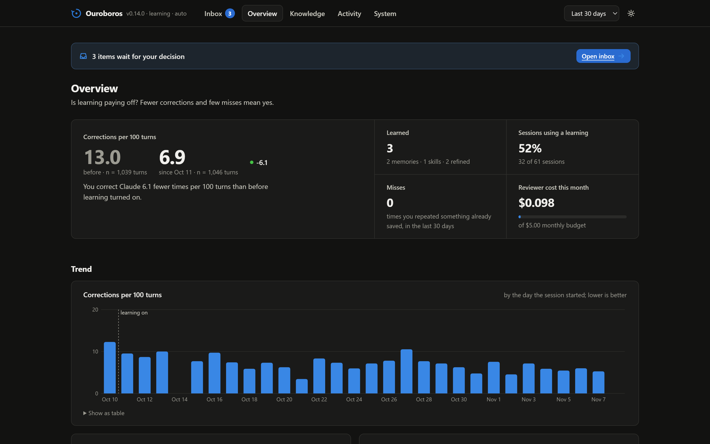
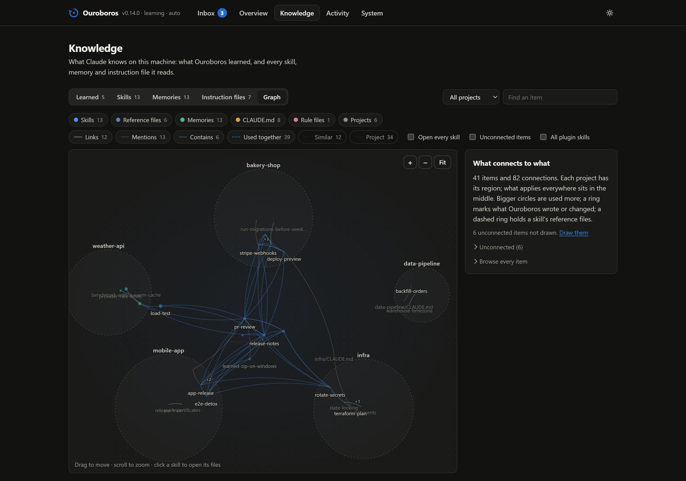

Teach Claude Code once.
Ouroboros reviews your sessions and turns your corrections, conventions and hard-won fixes into memories and skills. It checks each one against what is already written, puts it in the file that owns the topic, and lets you undo any of it.
> /plugin marketplace add lucamartins/ouroboros
> /plugin install ouroboros@ouroborosOpen source, MIT. Needs Node.js 22.13 or newer. Windows, macOS and Linux.
No — this repo uses pnpm. Never npm.
Reviewed turns 1–10: 1 correction, nothing already written about it.
📝 learned: Use pnpm in this repomemory · bakery-shop · undoable
Running pnpm test before the commit.
Nobody had to say it again.
Claude Code already has places to remember things: memories, skills, CLAUDE.md. Nothing fills them for you. So you make the same correction on Monday, again on Thursday, and again next month.
A loop that closes itself.
Hooks capture what happens. A model decides what is worth keeping. Deterministic code decides where it goes, and keeps a ledger of every write.
-
Session start
A short protocol tells Claude to save preferences, corrections, conventions and working paths as it goes, without being asked.
-
Every 10 turns
Claude reviews only the turns since the last review. Right after a fix that took several tries, it reviews sooner, while the working path is fresh.
-
Session end
An isolated Haiku call reviews whatever was not reviewed yet: no tools, no MCP servers, typically well under a cent.
-
Every day
Maintenance archives what nobody uses and consolidates what grew past its budget. Archived, never deleted.
Written where it belongs. Never twice.
Every proposal is checked against your CLAUDE.md files, rules, skills and memories before anything is saved. What is already said is dropped. A detail about a procedure goes into the skill that owns it, not into a new note beside it. A workaround for something you could fix once becomes a suggested fix instead.
One rubric, nine rules, applied the same way by every path that saves: would it change what Claude does, is it a standing rule, is it absent from the repo, is it verified, will it still hold in six months.
2. Events we handle: see events.md.
3. Replays: see replay.md.
+ 4. Restart `stripe listen` after changing the endpoint
+ secret; the old one keeps signing.Why: webhooks failed signature checks until the listener restarted.
Nothing changes your instructions behind your back.
Facts and skills can be written right away. Edits to your CLAUDE.md and rule files, and anything that rewrites existing text, wait for you as a diff.
- An inbox of what waits. Approve, reject or edit each change in the dashboard, or talk it through with Claude, one entry at a time, with
/ouroboros:inbox. - Conflicts go to you. When a learning contradicts a written rule, you decide: a new rule, or the current one stands.
- Every write can be undone.
/ouroboros:undoreverts only the lines that write changed, even after you edited the file. - Your call how much runs alone.
auto,hybridorqueue: from writing right away to holding everything for approval.

See whether it is working.
A local dashboard answers the question that matters: are you correcting Claude less since learning turned on? It also shows what was learned and why, what it costs, and how your knowledge fits together.

Your knowledge, as a map.
Skills, memories and instruction files, grouped by project, with the links, mentions and shared use between them. Broken links and items nothing connects to stand out, so you know what to merge or retire.

Cheap, local, and boring in the right places.
- Capture
- Hooks make no model calls and run in the background. A session never waits on them.
- Reviews
- In-session reviews read mostly cached context. The end-of-session review is one isolated
claude -p --safe-modecall, measured at US$ 0.002–0.008 per session with Haiku. - Budget
- A monthly cap, US$ 5 by default, checked before every model call Ouroboros makes.
- Data
- Stays on your machine in a SQLite file. The dashboard listens on
127.0.0.1only. - Trust
- Learns from your turns and observed outcomes, never from text a tool or web page returned. A secret filter checks every write.
- Install
- Zero dependencies, no
npm install, no build step. Node.js 22.13+ on Windows, macOS and Linux.
Six commands. Most days you need none.
/ouroboros:learnSave what this session taught, now./ouroboros:inboxGo through what waits for you, in the conversation./ouroboros:undoRevert the last write, or a given one./ouroboros:forgetArchive a learning so it stops loading./ouroboros:dashboardOpen the local dashboard./ouroboros:backfillMeasure, or learn from, past sessions.
Stop repeating yourself.
Install it, work as usual, and open the dashboard in a week.
> /plugin marketplace add lucamartins/ouroboros
> /plugin install ouroboros@ouroboros